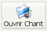
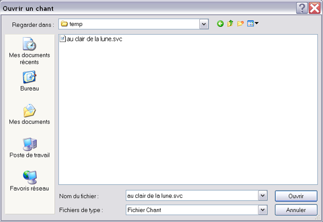

Pour ouvrir un chant déjà existant, ils suffit de cliquer sur Fichier > Ouvrir chant ou de cliquer simplement sur

Le logiciel vous demande alors quel est le chant que vous voulez ouvrir

Si vous cliquez sur Ouvrir, le logiciel ouvre le projet .Si vous cliquez sur annuler ou si il y a un problème avec le fichier (corrompu) rien n'est chargé.